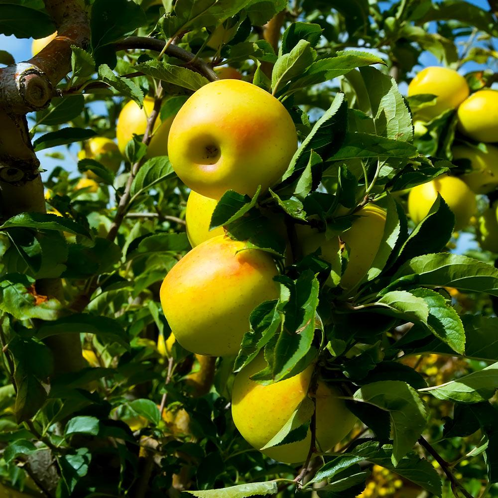

Can you design an experiment that detects the difference in fruit production between two apple tree varieties?
In this experiment, you are an orchadist with 8 plots of land. Four of your plots are near the forest, while the other four are farther away. You plan to grow 4 trees each of two different varieties (A and B).
This app will randomly plant your trees in the design of your choosing and then grow them for you. The grid will show you where your trees were planted, and how much fruit was produced by each tree (the number in the grid box).
Next, the graph will calculate the difference in the mean amount of fruit produced by the two varieties, specifically, Mean(Variety B) - Mean(Variety A).
You can choose the number of experiments which will repeat the random assignment and tree growth process up to 300 times. The explore observations slider lets you view an individual experiment letting you examine where the trees were planted and how much fruit each tree yielded.
When the Add block effect button is checked, the experiments will run assuming that proximity to the forest has an effect on fruit production. When unchecked, the forest has no effect on fruit production.
There are three types of experimental designs you can choose from.
- Completely Random: plants 8 trees in the 8 plots at random
- Horizontal: tree varieties are divided randomly in two blocks (top 4 plots & bottom 4 plots)
- Vertical: tree varieties are divided randomly in two blocks (left 4 plots & right 4 plots)
Student Tasks
-
Examine the results produced by using the different block designs (Make sure the block effect is unchecked). Do you notice any difference in the results produced? Can you detect a difference in the fruit production using these experiments? If yes, what do you estimate the difference in fruit production to be?
-
Suppose the forest has an effect on tree production. Click on the block effect and run the completely randomized experiment design. How do the results when there is a forest effect compare to when there was no effect from the forest? Can you explain what effect the forest is having on tree production? (Hint: Use the explore observations slider to examine individual experiments. You may want to examine experiments with and without the block effect.)
-
A well designed experiment should account for the forrest effect and yield results that allow us to conclude that one variety of tree produces more fruit than the other. Recall the results from the experiments that did not have a block effect. Approximately how often does the completely randomized design detect the difference that was found in the experiments without a block effect?
-
Examine a horizontal block design and vertical block design. Which design produces better results? That is, which design is more likely to detect the difference in the two varieties?
-
Can you explain what is happening in each blocking design? Use the explore observations slider and describe what is happening in a horizontal block design and what is happening in a vertical block design? Which design is better if the forest is having an impact on the results?